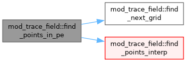
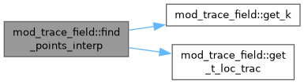
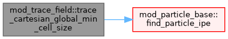
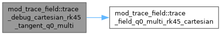
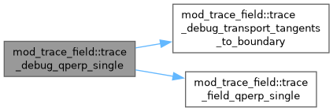
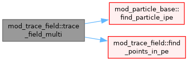
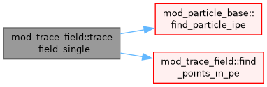
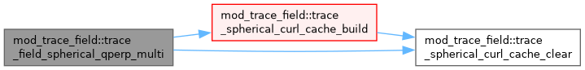
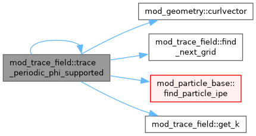
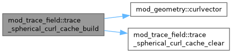

Data Types | |
| type | trace_length_result |
| type | trace_twist_result |
| type | trace_mapping_result |
| type | trace_qperp_result |
| type | trace_topology_result |
Functions/Subroutines | |
| subroutine, public | trace_set_step_control (mode, step_fraction, step_min) |
| subroutine, public | trace_set_integrator (mode, atol, rtol, safety, min_shrink, max_grow, tangent_floor, tangent_rtol) |
| subroutine, public | trace_rk2_stats_set_enabled (enabled) |
| subroutine, public | trace_rk2_stats_reset () |
| subroutine, public | trace_rk2_stats_report (label) |
| subroutine, public | trace_rk45_stats_set_enabled (enabled) |
| subroutine, public | trace_rk45_stats_reset () |
| subroutine, public | trace_rk45_stats_report (label) |
| subroutine, public | trace_spherical_profile_set (enabled) |
| subroutine, public | trace_spherical_profile_reset () |
| subroutine, public | trace_spherical_profile_count_seeds (nseed) |
| subroutine, public | trace_spherical_profile_report (label) |
| subroutine, public | trace_spherical_curl_cache_build (status) |
| subroutine, public | trace_spherical_curl_cache_clear () |
| subroutine, public | trace_field_length_single (seed, dl, max_steps, result, b_min) |
| subroutine, public | trace_field_twist_single (seed, dl, max_steps, result, b_min) |
| subroutine, public | trace_field_mapping_single (seed, dl, max_steps, result, b_min, source_normal) |
| subroutine, public | trace_field_qperp_single (seed, dl, max_steps, result, b_min) |
| subroutine, public | trace_debug_sample_bhat_gradbhat (seed, bhat, grad_bhat, status, b_min, spherical_cartfd) |
| subroutine, public | trace_debug_sample_endpoint_b_face_limit (xhit, face_id, b, bhat, status, b_min) |
| subroutine, public | trace_debug_compare_gradbhat (seed, eps, bhat_current, grad_current, status_current, bhat_xeps, grad_xeps, status_xeps, b_min) |
| subroutine, public | trace_debug_compare_gradbhat_methods (seed, eps, bhat_current, grad_current, status_current, bhat_xeps, grad_xeps, status_xeps, bhat_interp, grad_interp, status_interp, b_min) |
| subroutine, public | trace_debug_transport_tangents (seed, u0, v0, dl, nstep, forward, x_end, u_end, v_end, bhat_end, u_perp_end, v_perp_end, status, b_min) |
| subroutine, public | trace_debug_transport_tangents_to_boundary (seed, u0, v0, dl, max_steps, forward, x_end, u_end, v_end, bhat_end, b_end, u_perp_end, v_perp_end, u_face_end, v_face_end, length, face_id, status, b_min) |
| subroutine, public | trace_debug_qperp_single (seed, dl, max_steps, qperp, logqperp, x_f, x_b, u_f_perp, v_f_perp, u_b_perp, v_b_perp, b_seed, b_f, b_b, length_f, length_b, face_f, face_b, status, n2, bfactor, b_min) |
| subroutine, public | trace_spherical_global_min_cell_size (hmin, status) |
| subroutine, public | trace_cartesian_global_min_cell_size (hmin, status) |
| logical function, public | trace_periodic_phi_supported () |
| subroutine, public | trace_field_length_multi (seeds, nseed, dl, max_steps, results, b_min) |
| subroutine, public | trace_field_twist_multi (seeds, nseed, dl, max_steps, results, b_min) |
| subroutine, public | trace_field_mapping_multi (seeds, nseed, dl, max_steps, results, b_min, source_normal) |
| subroutine, public | trace_field_topology_multi (seeds, nseed, dl, max_steps, results, need_twist, need_mapping, b_min, source_normal) |
| subroutine, public | trace_field_qperp_multi (seeds, nseed, dl, max_steps, results, b_min, twist_results) |
| subroutine, public | trace_field_q0_multi_rk45_cartesian (seeds, nseed, dl, max_steps, results, b_min, twist_results) |
| subroutine, public | trace_debug_cartesian_rk45_tangent_q0_multi (seeds, nseed, dl, max_steps, results, b_min) |
| subroutine, public | trace_field_spherical_rmin_q_multi (seeds, nseed, dl, max_steps, results, b_min, twist_results) |
| subroutine, public | trace_field_rk2_short_boundary_q_multi (seeds, nseed, dl, max_steps, results, b_min, twist_results) |
| subroutine, public | trace_field_spherical_qperp_multi (seeds, nseed, dl, max_steps, results, b_min, twist_results) |
| subroutine, public | trace_field_spherical_rmin_q_qperp_multi (seeds, nseed, dl, max_steps, q_results, qperp_results, b_min, twist_results) |
| subroutine | trace_field_multi (xfm, wpm, wlm, dl, numl, nump, nwp, nwl, forwardm, ftype, tcondi) |
| subroutine | trace_field_single (xf, wp, wl, dl, nump, nwp, nwl, forward, ftype, tcondi) |
| subroutine | find_points_in_pe (igrid, ipoint_in, xf, wp, wl, dl, nump, nwp, nwl, forward, ftype, tcondi, statusf) |
| subroutine | find_next_grid (igrid, igrid_next, ipe_next, xf1, newpe, stopt) |
| subroutine | find_points_interp (igrid, ip_in, ip_out, xf, wp, wl, nump, nwp, nwl, dl, forward, ftype, tcondi, trace_status) |
| subroutine | get_k (xfn, igrid, k, ixil, dxbd, ftype, b_min, field_ok) |
| subroutine | get_t_loc_trac (igrid, xloc, tloc, ixil, dxbd) |
Variables | |
| integer, parameter, public | trace_status_active = 0 |
| integer, parameter, public | trace_status_boundary = 1 |
| integer, parameter, public | trace_status_weak_field = 2 |
| integer, parameter, public | trace_status_max_steps = 3 |
| integer, parameter, public | trace_status_seed_outside = 4 |
| integer, parameter, public | trace_status_out_of_domain = 5 |
| integer, parameter, public | trace_status_invalid_input = 6 |
| integer, parameter, public | trace_status_unsupported_geometry = 7 |
| integer, parameter, public | trace_status_trac_stop = 8 |
| integer, parameter, public | trace_status_mpi_unsupported = 9 |
| integer, parameter, public | trace_status_bad_curl_stencil = 10 |
| integer, parameter, public | trace_status_bad_grad_stencil = 11 |
| integer, parameter, public | trace_status_bad_face_limit_sample = 12 |
| integer, parameter, public | trace_status_singular_q = 13 |
| integer, parameter, public | trace_status_bad_q_bound = 14 |
| integer, parameter, public | trace_face_none = 0 |
| integer, parameter, public | trace_face_xmin = 1 |
| integer, parameter, public | trace_face_xmax = 2 |
| integer, parameter, public | trace_face_ymin = 3 |
| integer, parameter, public | trace_face_ymax = 4 |
| integer, parameter, public | trace_face_zmin = 5 |
| integer, parameter, public | trace_face_zmax = 6 |
| integer, parameter, public | trace_face_ambiguous = 7 |
Function/Subroutine Documentation
◆ find_next_grid()
| subroutine mod_trace_field::find_next_grid | ( | integer, intent(inout) | igrid, |
| integer, intent(inout) | igrid_next, | ||
| integer, intent(inout) | ipe_next, | ||
| double precision, dimension(ndim), intent(in) | xf1, | ||
| logical, intent(inout) | newpe, | ||
| logical, intent(inout) | stopt ) |
Definition at line 10185 of file mod_trace_field.t.
◆ find_points_in_pe()
| subroutine mod_trace_field::find_points_in_pe | ( | integer, intent(inout) | igrid, |
| integer, intent(in) | ipoint_in, | ||
| double precision, dimension(nump,ndim), intent(inout) | xf, | ||
| double precision, dimension(nump,nwp), intent(inout) | wp, | ||
| double precision, dimension(1+nwl), intent(inout) | wl, | ||
| double precision, intent(in) | dl, | ||
| integer, intent(in) | nump, | ||
| integer, intent(in) | nwp, | ||
| integer, intent(in) | nwl, | ||
| logical, intent(in) | forward, | ||
| character(len=std_len), intent(in) | ftype, | ||
| character(len=std_len), intent(in) | tcondi, | ||
| double precision, dimension(4+ndim), intent(inout) | statusf ) |
Definition at line 10107 of file mod_trace_field.t.

◆ find_points_interp()
| subroutine mod_trace_field::find_points_interp | ( | integer, intent(in) | igrid, |
| integer, intent(in) | ip_in, | ||
| integer, intent(inout) | ip_out, | ||
| double precision, dimension(nump,ndim), intent(inout) | xf, | ||
| double precision, dimension(nump,nwp), intent(inout) | wp, | ||
| double precision, dimension(1+nwl), intent(inout) | wl, | ||
| integer, intent(in) | nump, | ||
| integer, intent(in) | nwp, | ||
| integer, intent(in) | nwl, | ||
| double precision, intent(in) | dl, | ||
| logical, intent(in) | forward, | ||
| character(len=std_len), intent(in) | ftype, | ||
| character(len=std_len), intent(in) | tcondi, | ||
| integer, intent(out) | trace_status ) |
Definition at line 10261 of file mod_trace_field.t.

◆ get_k()
| subroutine mod_trace_field::get_k | ( | double precision, dimension(ndim) | xfn, |
| integer | igrid, | ||
| double precision, dimension(ndim) | k, | ||
| integer | ixi, | ||
| integer | l, | ||
| double precision | dxb, | ||
| integer | d, | ||
| character(len=std_len) | ftype, | ||
| double precision, intent(in), optional | b_min, | ||
| logical, intent(out), optional | field_ok ) |
Definition at line 10383 of file mod_trace_field.t.
◆ get_t_loc_trac()
| subroutine mod_trace_field::get_t_loc_trac | ( | integer, intent(in) | igrid, |
| double precision, dimension(ndim), intent(inout) | xloc, | ||
| double precision, intent(inout) | tloc, | ||
| integer, intent(in) | ixi, | ||
| integer, intent(in) | l, | ||
| double precision, intent(in) | dxb, | ||
| integer, intent(in) | d ) |
Definition at line 10495 of file mod_trace_field.t.
◆ trace_cartesian_global_min_cell_size()
| subroutine, public mod_trace_field::trace_cartesian_global_min_cell_size | ( | double precision, intent(out) | hmin, |
| integer, intent(out) | status ) |
Definition at line 5404 of file mod_trace_field.t.

◆ trace_debug_cartesian_rk45_tangent_q0_multi()
| subroutine, public mod_trace_field::trace_debug_cartesian_rk45_tangent_q0_multi | ( | double precision, dimension(nseed,ndim), intent(in) | seeds, |
| integer, intent(in) | nseed, | ||
| double precision, intent(in) | dl, | ||
| integer, intent(in) | max_steps, | ||
| type(trace_qperp_result), dimension(nseed), intent(out) | results, | ||
| double precision, intent(in), optional | b_min ) |
Definition at line 9315 of file mod_trace_field.t.

◆ trace_debug_compare_gradbhat()
| subroutine, public mod_trace_field::trace_debug_compare_gradbhat | ( | double precision, dimension(ndim), intent(in) | seed, |
| double precision, intent(in) | eps, | ||
| double precision, dimension(3), intent(out) | bhat_current, | ||
| double precision, dimension(3,3), intent(out) | grad_current, | ||
| integer, intent(out) | status_current, | ||
| double precision, dimension(3), intent(out) | bhat_xeps, | ||
| double precision, dimension(3,3), intent(out) | grad_xeps, | ||
| integer, intent(out) | status_xeps, | ||
| double precision, intent(in), optional | b_min ) |
Definition at line 1380 of file mod_trace_field.t.
◆ trace_debug_compare_gradbhat_methods()
| subroutine, public mod_trace_field::trace_debug_compare_gradbhat_methods | ( | double precision, dimension(ndim), intent(in) | seed, |
| double precision, intent(in) | eps, | ||
| double precision, dimension(3), intent(out) | bhat_current, | ||
| double precision, dimension(3,3), intent(out) | grad_current, | ||
| integer, intent(out) | status_current, | ||
| double precision, dimension(3), intent(out) | bhat_xeps, | ||
| double precision, dimension(3,3), intent(out) | grad_xeps, | ||
| integer, intent(out) | status_xeps, | ||
| double precision, dimension(3), intent(out) | bhat_interp, | ||
| double precision, dimension(3,3), intent(out) | grad_interp, | ||
| integer, intent(out) | status_interp, | ||
| double precision, intent(in), optional | b_min ) |
Definition at line 1423 of file mod_trace_field.t.
◆ trace_debug_qperp_single()
| subroutine, public mod_trace_field::trace_debug_qperp_single | ( | double precision, dimension(ndim), intent(in) | seed, |
| double precision, intent(in) | dl, | ||
| integer, intent(in) | max_steps, | ||
| double precision, intent(out) | qperp, | ||
| double precision, intent(out) | logqperp, | ||
| double precision, dimension(ndim), intent(out) | x_f, | ||
| double precision, dimension(ndim), intent(out) | x_b, | ||
| double precision, dimension(ndim), intent(out) | u_f_perp, | ||
| double precision, dimension(ndim), intent(out) | v_f_perp, | ||
| double precision, dimension(ndim), intent(out) | u_b_perp, | ||
| double precision, dimension(ndim), intent(out) | v_b_perp, | ||
| double precision, dimension(ndim), intent(out) | b_seed, | ||
| double precision, dimension(ndim), intent(out) | b_f, | ||
| double precision, dimension(ndim), intent(out) | b_b, | ||
| double precision, intent(out) | length_f, | ||
| double precision, intent(out) | length_b, | ||
| integer, intent(out) | face_f, | ||
| integer, intent(out) | face_b, | ||
| integer, intent(out) | status, | ||
| double precision, intent(out) | n2, | ||
| double precision, intent(out) | bfactor, | ||
| double precision, intent(in), optional | b_min ) |
Definition at line 1706 of file mod_trace_field.t.

◆ trace_debug_sample_bhat_gradbhat()
| subroutine, public mod_trace_field::trace_debug_sample_bhat_gradbhat | ( | double precision, dimension(ndim), intent(in) | seed, |
| double precision, dimension(3), intent(out) | bhat, | ||
| double precision, dimension(3,3), intent(out) | grad_bhat, | ||
| integer, intent(out) | status, | ||
| double precision, intent(in), optional | b_min, | ||
| logical, intent(in), optional | spherical_cartfd ) |
Definition at line 1255 of file mod_trace_field.t.
◆ trace_debug_sample_endpoint_b_face_limit()
| subroutine, public mod_trace_field::trace_debug_sample_endpoint_b_face_limit | ( | double precision, dimension(ndim), intent(in) | xhit, |
| integer, intent(in) | face_id, | ||
| double precision, dimension(ndim), intent(out) | b, | ||
| double precision, dimension(ndim), intent(out) | bhat, | ||
| integer, intent(out) | status, | ||
| double precision, intent(in), optional | b_min ) |
Definition at line 1302 of file mod_trace_field.t.
◆ trace_debug_transport_tangents()
| subroutine, public mod_trace_field::trace_debug_transport_tangents | ( | double precision, dimension(ndim), intent(in) | seed, |
| double precision, dimension(ndim), intent(in) | u0, | ||
| double precision, dimension(ndim), intent(in) | v0, | ||
| double precision, intent(in) | dl, | ||
| integer, intent(in) | nstep, | ||
| logical, intent(in) | forward, | ||
| double precision, dimension(ndim), intent(out) | x_end, | ||
| double precision, dimension(ndim), intent(out) | u_end, | ||
| double precision, dimension(ndim), intent(out) | v_end, | ||
| double precision, dimension(ndim), intent(out) | bhat_end, | ||
| double precision, dimension(ndim), intent(out) | u_perp_end, | ||
| double precision, dimension(ndim), intent(out) | v_perp_end, | ||
| integer, intent(out) | status, | ||
| double precision, intent(in), optional | b_min ) |
Definition at line 1478 of file mod_trace_field.t.
◆ trace_debug_transport_tangents_to_boundary()
| subroutine, public mod_trace_field::trace_debug_transport_tangents_to_boundary | ( | double precision, dimension(ndim), intent(in) | seed, |
| double precision, dimension(ndim), intent(in) | u0, | ||
| double precision, dimension(ndim), intent(in) | v0, | ||
| double precision, intent(in) | dl, | ||
| integer, intent(in) | max_steps, | ||
| logical, intent(in) | forward, | ||
| double precision, dimension(ndim), intent(out) | x_end, | ||
| double precision, dimension(ndim), intent(out) | u_end, | ||
| double precision, dimension(ndim), intent(out) | v_end, | ||
| double precision, dimension(ndim), intent(out) | bhat_end, | ||
| double precision, dimension(ndim), intent(out) | b_end, | ||
| double precision, dimension(ndim), intent(out) | u_perp_end, | ||
| double precision, dimension(ndim), intent(out) | v_perp_end, | ||
| double precision, dimension(ndim), intent(out) | u_face_end, | ||
| double precision, dimension(ndim), intent(out) | v_face_end, | ||
| double precision, intent(out) | length, | ||
| integer, intent(out) | face_id, | ||
| integer, intent(out) | status, | ||
| double precision, intent(in), optional | b_min ) |
Definition at line 1539 of file mod_trace_field.t.
◆ trace_field_length_multi()
| subroutine, public mod_trace_field::trace_field_length_multi | ( | double precision, dimension(nseed,ndim), intent(in) | seeds, |
| integer, intent(in) | nseed, | ||
| double precision, intent(in) | dl, | ||
| integer, intent(in) | max_steps, | ||
| type(trace_length_result), dimension(nseed), intent(out) | results, | ||
| double precision, intent(in), optional | b_min ) |
Definition at line 9039 of file mod_trace_field.t.
◆ trace_field_length_single()
| subroutine, public mod_trace_field::trace_field_length_single | ( | double precision, dimension(ndim), intent(in) | seed, |
| double precision, intent(in) | dl, | ||
| integer, intent(in) | max_steps, | ||
| type(trace_length_result), intent(out) | result, | ||
| double precision, intent(in), optional | b_min ) |
Definition at line 1186 of file mod_trace_field.t.
◆ trace_field_mapping_multi()
| subroutine, public mod_trace_field::trace_field_mapping_multi | ( | double precision, dimension(nseed,ndim), intent(in) | seeds, |
| integer, intent(in) | nseed, | ||
| double precision, intent(in) | dl, | ||
| integer, intent(in) | max_steps, | ||
| type(trace_mapping_result), dimension(nseed), intent(out) | results, | ||
| double precision, intent(in), optional | b_min, | ||
| double precision, dimension(3), intent(in), optional | source_normal ) |
Definition at line 9067 of file mod_trace_field.t.
◆ trace_field_mapping_single()
| subroutine, public mod_trace_field::trace_field_mapping_single | ( | double precision, dimension(ndim), intent(in) | seed, |
| double precision, intent(in) | dl, | ||
| integer, intent(in) | max_steps, | ||
| type(trace_mapping_result), intent(out) | result, | ||
| double precision, intent(in), optional | b_min, | ||
| double precision, dimension(3), intent(in), optional | source_normal ) |
Definition at line 1215 of file mod_trace_field.t.
◆ trace_field_multi()
| subroutine mod_trace_field::trace_field_multi | ( | double precision, dimension(numl,nump,ndim), intent(inout) | xfm, |
| double precision, dimension(numl,nump,nwp), intent(inout) | wpm, | ||
| double precision, dimension(numl,1+nwl), intent(inout) | wlm, | ||
| double precision, intent(in) | dl, | ||
| integer, intent(in) | numl, | ||
| integer, intent(in) | nump, | ||
| integer, intent(in) | nwp, | ||
| integer, intent(in) | nwl, | ||
| logical, dimension(numl), intent(in) | forwardm, | ||
| character(len=std_len), intent(in) | ftype, | ||
| character(len=std_len), intent(in) | tcondi ) |
Definition at line 9811 of file mod_trace_field.t.

◆ trace_field_q0_multi_rk45_cartesian()
| subroutine, public mod_trace_field::trace_field_q0_multi_rk45_cartesian | ( | double precision, dimension(nseed,ndim), intent(in) | seeds, |
| integer, intent(in) | nseed, | ||
| double precision, intent(in) | dl, | ||
| integer, intent(in) | max_steps, | ||
| type(trace_qperp_result), dimension(nseed), intent(out) | results, | ||
| double precision, intent(in), optional | b_min, | ||
| type(trace_twist_result), dimension(nseed), intent(out), optional | twist_results ) |
Definition at line 9220 of file mod_trace_field.t.
◆ trace_field_qperp_multi()
| subroutine, public mod_trace_field::trace_field_qperp_multi | ( | double precision, dimension(nseed,ndim), intent(in) | seeds, |
| integer, intent(in) | nseed, | ||
| double precision, intent(in) | dl, | ||
| integer, intent(in) | max_steps, | ||
| type(trace_qperp_result), dimension(nseed), intent(out) | results, | ||
| double precision, intent(in), optional | b_min, | ||
| type(trace_twist_result), dimension(nseed), intent(out), optional | twist_results ) |
Definition at line 9115 of file mod_trace_field.t.
◆ trace_field_qperp_single()
| subroutine, public mod_trace_field::trace_field_qperp_single | ( | double precision, dimension(ndim), intent(in) | seed, |
| double precision, intent(in) | dl, | ||
| integer, intent(in) | max_steps, | ||
| type(trace_qperp_result), intent(out) | result, | ||
| double precision, intent(in), optional | b_min ) |
Definition at line 1241 of file mod_trace_field.t.
◆ trace_field_rk2_short_boundary_q_multi()
| subroutine, public mod_trace_field::trace_field_rk2_short_boundary_q_multi | ( | double precision, dimension(nseed,ndim), intent(in) | seeds, |
| integer, intent(in) | nseed, | ||
| double precision, intent(in) | dl, | ||
| integer, intent(in) | max_steps, | ||
| type(trace_qperp_result), dimension(nseed), intent(out) | results, | ||
| double precision, intent(in), optional | b_min, | ||
| type(trace_twist_result), dimension(nseed), intent(out), optional | twist_results ) |
Definition at line 9435 of file mod_trace_field.t.
◆ trace_field_single()
| subroutine mod_trace_field::trace_field_single | ( | double precision, dimension(nump,ndim), intent(inout) | xf, |
| double precision, dimension(nump,nwp), intent(inout) | wp, | ||
| double precision, dimension(1+nwl), intent(inout) | wl, | ||
| double precision, intent(in) | dl, | ||
| integer, intent(in) | nump, | ||
| integer, intent(in) | nwp, | ||
| integer, intent(in) | nwl, | ||
| logical, intent(in) | forward, | ||
| character(len=std_len), intent(in) | ftype, | ||
| character(len=std_len), intent(in) | tcondi ) |
Definition at line 9982 of file mod_trace_field.t.

◆ trace_field_spherical_qperp_multi()
| subroutine, public mod_trace_field::trace_field_spherical_qperp_multi | ( | double precision, dimension(nseed,ndim), intent(in) | seeds, |
| integer, intent(in) | nseed, | ||
| double precision, intent(in) | dl, | ||
| integer, intent(in) | max_steps, | ||
| type(trace_qperp_result), dimension(nseed), intent(out) | results, | ||
| double precision, intent(in), optional | b_min, | ||
| type(trace_twist_result), dimension(nseed), intent(out), optional | twist_results ) |
Definition at line 9549 of file mod_trace_field.t.

◆ trace_field_spherical_rmin_q_multi()
| subroutine, public mod_trace_field::trace_field_spherical_rmin_q_multi | ( | double precision, dimension(nseed,ndim), intent(in) | seeds, |
| integer, intent(in) | nseed, | ||
| double precision, intent(in) | dl, | ||
| integer, intent(in) | max_steps, | ||
| type(trace_qperp_result), dimension(nseed), intent(out) | results, | ||
| double precision, intent(in), optional | b_min, | ||
| type(trace_twist_result), dimension(nseed), intent(out), optional | twist_results ) |
Definition at line 9331 of file mod_trace_field.t.
◆ trace_field_spherical_rmin_q_qperp_multi()
| subroutine, public mod_trace_field::trace_field_spherical_rmin_q_qperp_multi | ( | double precision, dimension(nseed,ndim), intent(in) | seeds, |
| integer, intent(in) | nseed, | ||
| double precision, intent(in) | dl, | ||
| integer, intent(in) | max_steps, | ||
| type(trace_qperp_result), dimension(nseed), intent(out) | q_results, | ||
| type(trace_qperp_result), dimension(nseed), intent(out) | qperp_results, | ||
| double precision, intent(in), optional | b_min, | ||
| type(trace_twist_result), dimension(nseed), intent(out), optional | twist_results ) |
Definition at line 9672 of file mod_trace_field.t.
◆ trace_field_topology_multi()
| subroutine, public mod_trace_field::trace_field_topology_multi | ( | double precision, dimension(nseed,ndim), intent(in) | seeds, |
| integer, intent(in) | nseed, | ||
| double precision, intent(in) | dl, | ||
| integer, intent(in) | max_steps, | ||
| type(trace_topology_result), dimension(nseed), intent(out) | results, | ||
| logical, intent(in), optional | need_twist, | ||
| logical, intent(in), optional | need_mapping, | ||
| double precision, intent(in), optional | b_min, | ||
| double precision, dimension(3), intent(in), optional | source_normal ) |
Definition at line 9088 of file mod_trace_field.t.
◆ trace_field_twist_multi()
| subroutine, public mod_trace_field::trace_field_twist_multi | ( | double precision, dimension(nseed,ndim), intent(in) | seeds, |
| integer, intent(in) | nseed, | ||
| double precision, intent(in) | dl, | ||
| integer, intent(in) | max_steps, | ||
| type(trace_twist_result), dimension(nseed), intent(out) | results, | ||
| double precision, intent(in), optional | b_min ) |
Definition at line 9053 of file mod_trace_field.t.
◆ trace_field_twist_single()
| subroutine, public mod_trace_field::trace_field_twist_single | ( | double precision, dimension(ndim), intent(in) | seed, |
| double precision, intent(in) | dl, | ||
| integer, intent(in) | max_steps, | ||
| type(trace_twist_result), intent(out) | result, | ||
| double precision, intent(in), optional | b_min ) |
Definition at line 1201 of file mod_trace_field.t.
◆ trace_periodic_phi_supported()
| logical function, public mod_trace_field::trace_periodic_phi_supported |
Definition at line 6715 of file mod_trace_field.t.

◆ trace_rk2_stats_report()
| subroutine, public mod_trace_field::trace_rk2_stats_report | ( | character(len=*), intent(in) | label | ) |
Definition at line 588 of file mod_trace_field.t.
◆ trace_rk2_stats_reset()
| subroutine, public mod_trace_field::trace_rk2_stats_reset |
Definition at line 565 of file mod_trace_field.t.
◆ trace_rk2_stats_set_enabled()
| subroutine, public mod_trace_field::trace_rk2_stats_set_enabled | ( | logical, intent(in) | enabled | ) |
Definition at line 559 of file mod_trace_field.t.
◆ trace_rk45_stats_report()
| subroutine, public mod_trace_field::trace_rk45_stats_report | ( | character(len=*), intent(in) | label | ) |
Definition at line 781 of file mod_trace_field.t.
◆ trace_rk45_stats_reset()
| subroutine, public mod_trace_field::trace_rk45_stats_reset |
Definition at line 757 of file mod_trace_field.t.
◆ trace_rk45_stats_set_enabled()
| subroutine, public mod_trace_field::trace_rk45_stats_set_enabled | ( | logical, intent(in) | enabled | ) |
Definition at line 751 of file mod_trace_field.t.
◆ trace_set_integrator()
| subroutine, public mod_trace_field::trace_set_integrator | ( | character(len=*), intent(in) | mode, |
| double precision, intent(in) | atol, | ||
| double precision, intent(in) | rtol, | ||
| double precision, intent(in) | safety, | ||
| double precision, intent(in) | min_shrink, | ||
| double precision, intent(in) | max_grow, | ||
| double precision, intent(in) | tangent_floor, | ||
| double precision, intent(in) | tangent_rtol ) |
Definition at line 525 of file mod_trace_field.t.
◆ trace_set_step_control()
| subroutine, public mod_trace_field::trace_set_step_control | ( | character(len=*), intent(in) | mode, |
| double precision, intent(in) | step_fraction, | ||
| double precision, intent(in) | step_min ) |
Definition at line 500 of file mod_trace_field.t.
◆ trace_spherical_curl_cache_build()
| subroutine, public mod_trace_field::trace_spherical_curl_cache_build | ( | integer, intent(out) | status | ) |
Definition at line 1111 of file mod_trace_field.t.

◆ trace_spherical_curl_cache_clear()
| subroutine, public mod_trace_field::trace_spherical_curl_cache_clear |
Definition at line 1171 of file mod_trace_field.t.
◆ trace_spherical_global_min_cell_size()
| subroutine, public mod_trace_field::trace_spherical_global_min_cell_size | ( | double precision, intent(out) | hmin, |
| integer, intent(out) | status ) |
Definition at line 5370 of file mod_trace_field.t.
◆ trace_spherical_profile_count_seeds()
| subroutine, public mod_trace_field::trace_spherical_profile_count_seeds | ( | integer, intent(in) | nseed | ) |
Definition at line 988 of file mod_trace_field.t.
◆ trace_spherical_profile_report()
| subroutine, public mod_trace_field::trace_spherical_profile_report | ( | character(len=*), intent(in) | label | ) |
Definition at line 996 of file mod_trace_field.t.
◆ trace_spherical_profile_reset()
| subroutine, public mod_trace_field::trace_spherical_profile_reset |
Definition at line 954 of file mod_trace_field.t.
◆ trace_spherical_profile_set()
| subroutine, public mod_trace_field::trace_spherical_profile_set | ( | logical, intent(in) | enabled | ) |
Definition at line 948 of file mod_trace_field.t.
Variable Documentation
◆ trace_face_ambiguous
| integer, parameter, public mod_trace_field::trace_face_ambiguous = 7 |
Definition at line 42 of file mod_trace_field.t.
◆ trace_face_none
| integer, parameter, public mod_trace_field::trace_face_none = 0 |
Definition at line 35 of file mod_trace_field.t.
◆ trace_face_xmax
| integer, parameter, public mod_trace_field::trace_face_xmax = 2 |
Definition at line 37 of file mod_trace_field.t.
◆ trace_face_xmin
| integer, parameter, public mod_trace_field::trace_face_xmin = 1 |
Definition at line 36 of file mod_trace_field.t.
◆ trace_face_ymax
| integer, parameter, public mod_trace_field::trace_face_ymax = 4 |
Definition at line 39 of file mod_trace_field.t.
◆ trace_face_ymin
| integer, parameter, public mod_trace_field::trace_face_ymin = 3 |
Definition at line 38 of file mod_trace_field.t.
◆ trace_face_zmax
| integer, parameter, public mod_trace_field::trace_face_zmax = 6 |
Definition at line 41 of file mod_trace_field.t.
◆ trace_face_zmin
| integer, parameter, public mod_trace_field::trace_face_zmin = 5 |
Definition at line 40 of file mod_trace_field.t.
◆ trace_status_active
| integer, parameter, public mod_trace_field::trace_status_active = 0 |
Definition at line 13 of file mod_trace_field.t.
◆ trace_status_bad_curl_stencil
| integer, parameter, public mod_trace_field::trace_status_bad_curl_stencil = 10 |
Definition at line 23 of file mod_trace_field.t.
◆ trace_status_bad_face_limit_sample
| integer, parameter, public mod_trace_field::trace_status_bad_face_limit_sample = 12 |
Definition at line 25 of file mod_trace_field.t.
◆ trace_status_bad_grad_stencil
| integer, parameter, public mod_trace_field::trace_status_bad_grad_stencil = 11 |
Definition at line 24 of file mod_trace_field.t.
◆ trace_status_bad_q_bound
| integer, parameter, public mod_trace_field::trace_status_bad_q_bound = 14 |
Definition at line 27 of file mod_trace_field.t.
◆ trace_status_boundary
| integer, parameter, public mod_trace_field::trace_status_boundary = 1 |
Definition at line 14 of file mod_trace_field.t.
◆ trace_status_invalid_input
| integer, parameter, public mod_trace_field::trace_status_invalid_input = 6 |
Definition at line 19 of file mod_trace_field.t.
◆ trace_status_max_steps
| integer, parameter, public mod_trace_field::trace_status_max_steps = 3 |
Definition at line 16 of file mod_trace_field.t.
◆ trace_status_mpi_unsupported
| integer, parameter, public mod_trace_field::trace_status_mpi_unsupported = 9 |
Definition at line 22 of file mod_trace_field.t.
◆ trace_status_out_of_domain
| integer, parameter, public mod_trace_field::trace_status_out_of_domain = 5 |
Definition at line 18 of file mod_trace_field.t.
◆ trace_status_seed_outside
| integer, parameter, public mod_trace_field::trace_status_seed_outside = 4 |
Definition at line 17 of file mod_trace_field.t.
◆ trace_status_singular_q
| integer, parameter, public mod_trace_field::trace_status_singular_q = 13 |
Definition at line 26 of file mod_trace_field.t.
◆ trace_status_trac_stop
| integer, parameter, public mod_trace_field::trace_status_trac_stop = 8 |
Definition at line 21 of file mod_trace_field.t.
◆ trace_status_unsupported_geometry
| integer, parameter, public mod_trace_field::trace_status_unsupported_geometry = 7 |
Definition at line 20 of file mod_trace_field.t.
◆ trace_status_weak_field
| integer, parameter, public mod_trace_field::trace_status_weak_field = 2 |
Definition at line 15 of file mod_trace_field.t.
Generated by